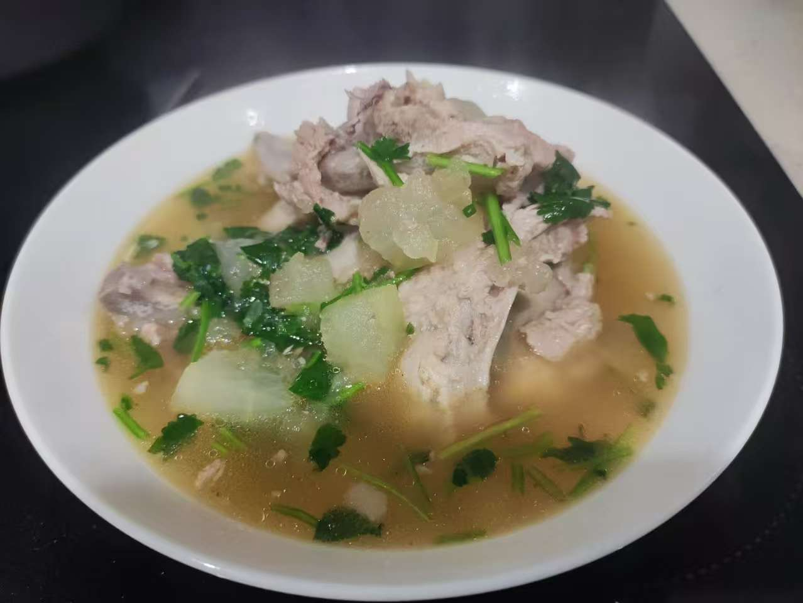
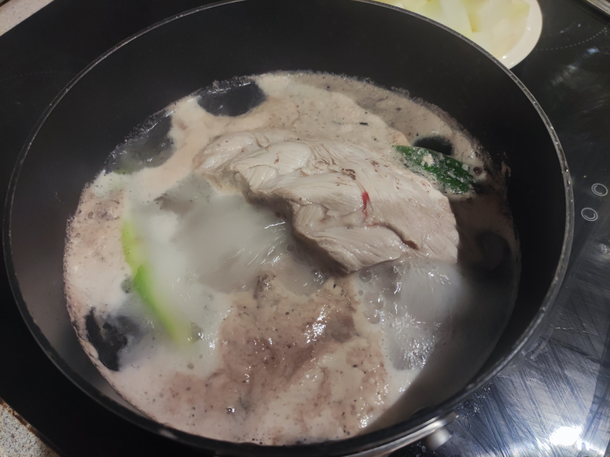
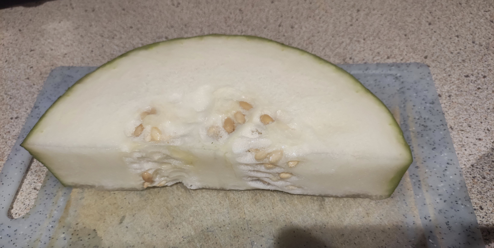
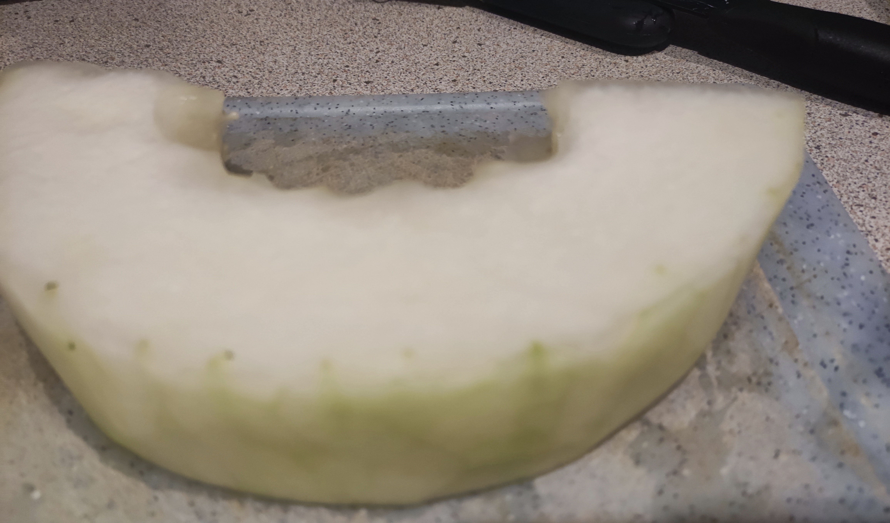
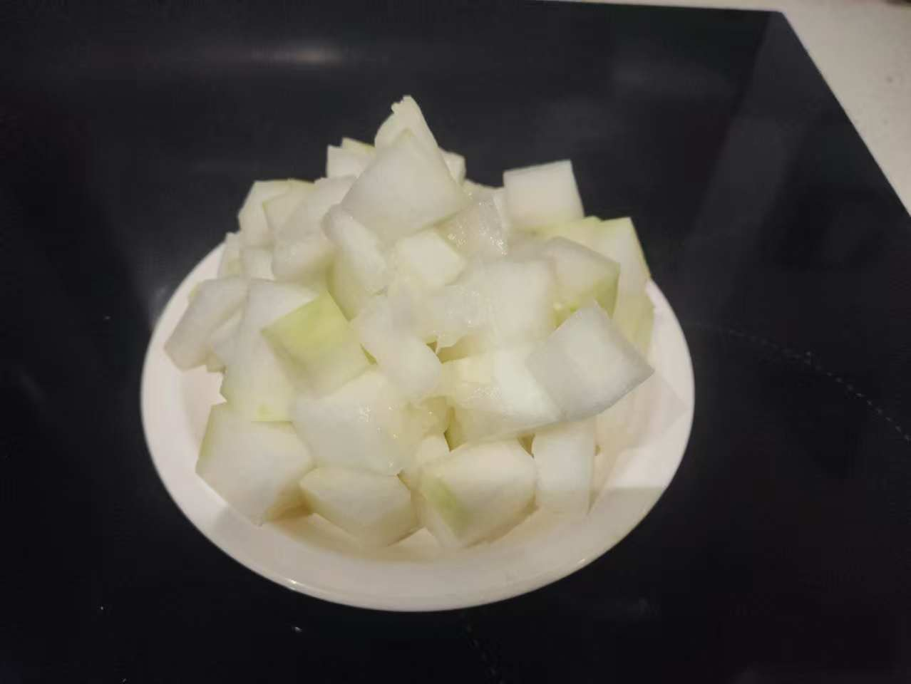
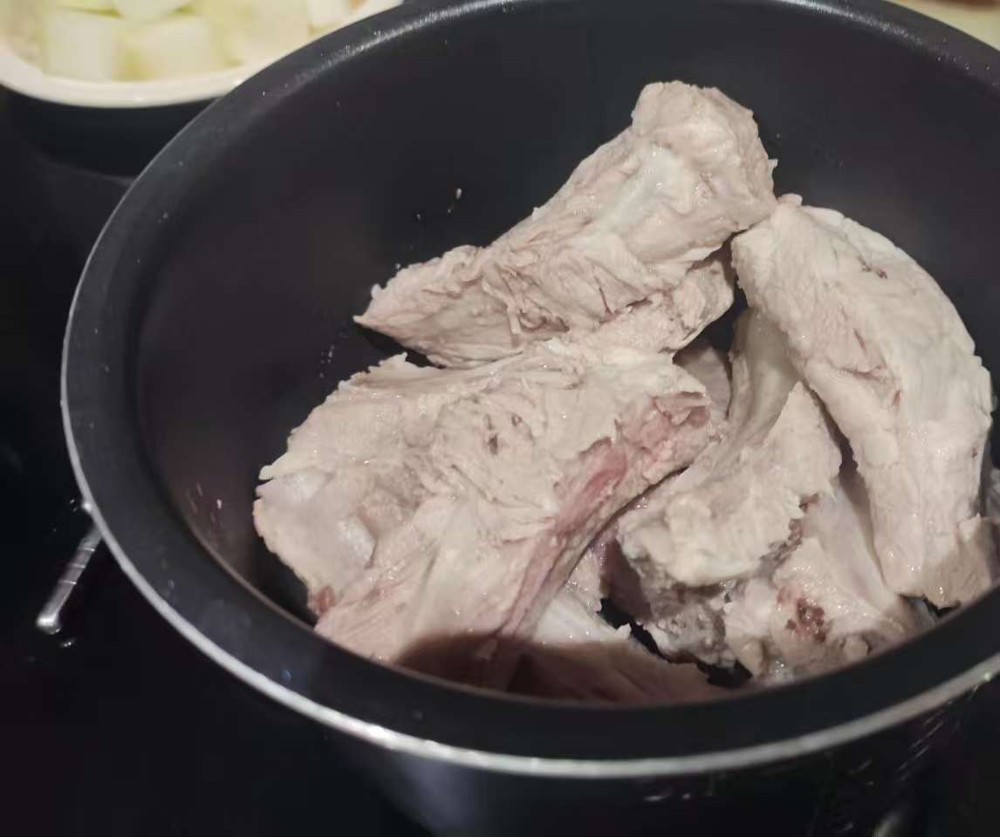
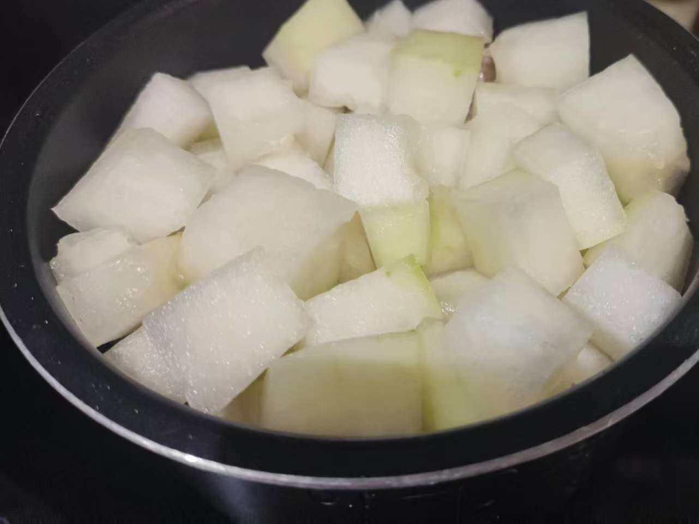
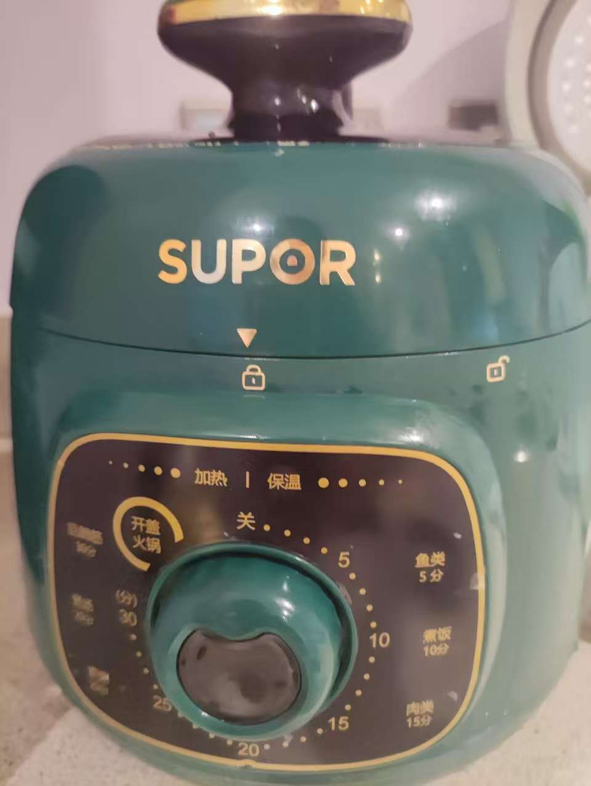
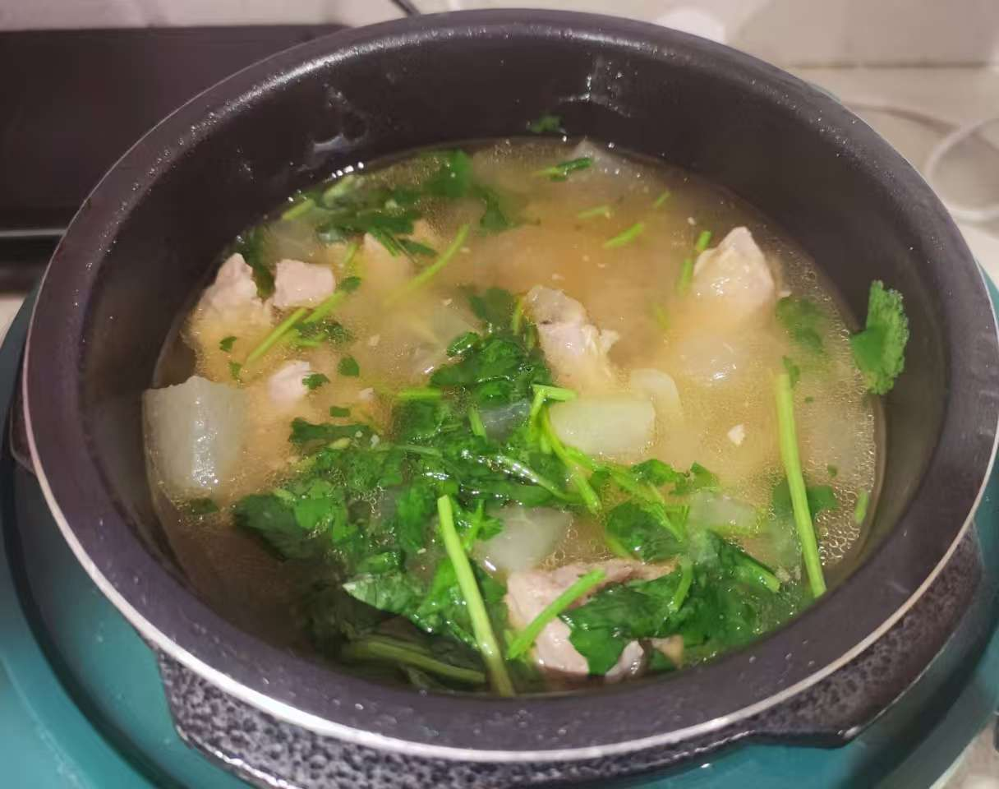

Chinese Pork Rib Soup
There are different kinds of pork rib soup in China, depending on which ingredients you put together with it. This picture shows pork rib soup with winter melon(also called wax gourd, or "donggua" in Chinese). If you don't know what winter melon is or can't find it in a local supermarket, feel free to use carrot or potato. They will just work the same!
Winter melon pork rib soup is a light, nourishing soup that cools the body, reduces swelling, supports healthy skin, and strengthens bones. Perfect for keeping you refreshed and energized!

Check Home for more recipes
Ingredients
Here are the ingredients I usually use to make my winter melon pork rib soup:
Steps
-
Blanch the pork ribs
- Place the ribs in cold water and bring to a boil. Add cooking wine and spring onions to help remove any unpleasant smell
- While the ribs are blanching, boil a kettle of hot water
- Once the water with the ribs comes to a boil, drain the ribs and rinse them with the hot water to remove blood and impurities


-
Peel and cut the winter melon
- Remove the seeds and soft pulp from the winter melon, peel and cut it into cubes



-
Prepare the soup base
- Place the blanched ribs, winter cubes, and enough water into the inner pot of the pressure cooker. No need to put any seasoning. Close the lid and cook on high pressure for about 25-30 minutes
Ps. A pressure cooker is great for pork rib soup because it makes the meat soft, juicy, and delicious.



-
Season
- After the soup is cooked in the pressure cooker, carefully release the steam before opening the lid.
Note: Always release the pressure fully before opening the cooker to ensure safety.
- Add a little salt, soy sauce, pepper, and the seasoning packet from the Korean noodle pack, plus chopped coriander.
- Stir gently so the flavors infuse into the soup

Serve
- Ta-da! A light, flavorful, and nourishing winter melon pork rib soup is ready. Ladle into bowls and enjoy hot!
You may be also interested in: